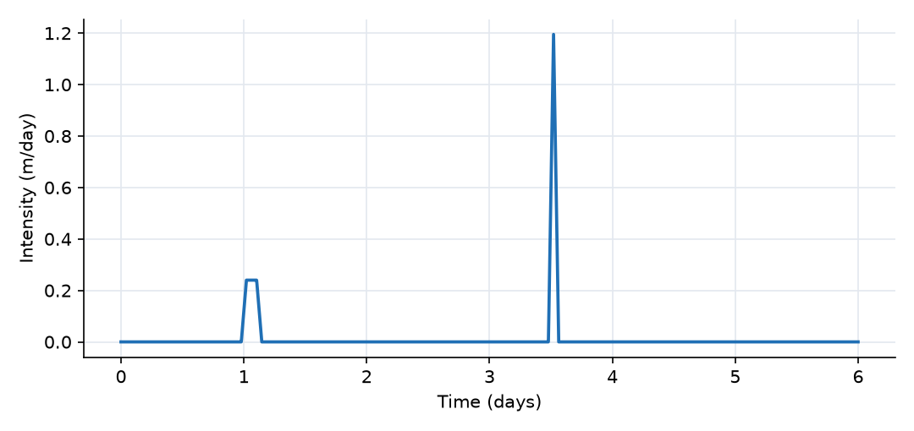
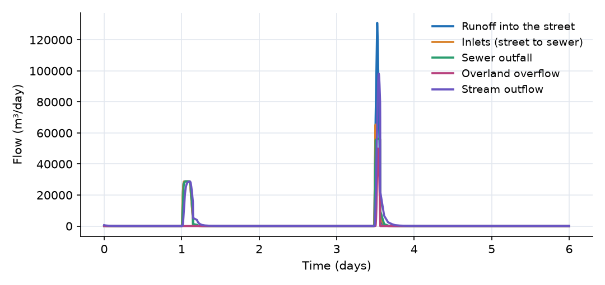
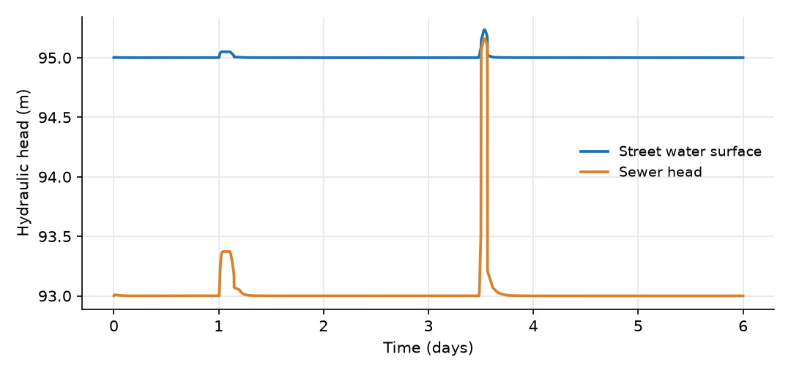
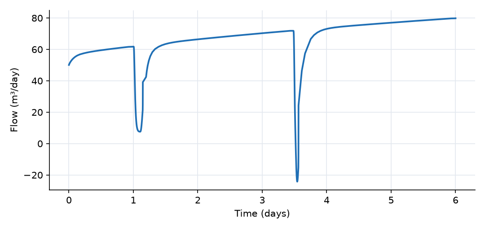

What this model represents
In most developed areas, runoff from roofs, roads and parking lots does not reach a stream through an open channel. It runs along street gutters to grate inlets, drops into a storm sewer, and is discharged at an outfall into the nearest stream. This underground network is the minor system. It is designed for frequent storms (typically a 2 to 10 year return period). When a storm exceeds the capacity of the inlets or of the pipe, the excess stays on the street and flows overland, along the street and through low points, to the receiving water: the major system. A model that represents both, and lets water move between them, is a dual drainage model.
This example is a single 40 ha neighbourhood served by one street and one trunk sewer, subjected to two storms: a moderate one that the sewer handles completely and an intense one that it does not. It shows how to
- connect an
Urban_HRUcomposite (surfaces, soils and groundwater in one object) to a street in place of a stream, - represent the inlets with the HEC-22 weir and orifice relations,
- let the sewer surcharge into its manholes, and
- route the flow the sewer cannot take overland to the stream.
The same building blocks scale up: a city is many such units, each with its own street and sewer segment, with the sewer segments connected to each other.
How it works
Flow path. Rain falls on the neighbourhood. The impervious surface (30 %, 12 ha) drains through its internal reach and Impervious_outlet into the Street. The pervious surface (28 ha) infiltrates into the soil column; any surface runoff drains through Pervious_outlet, also into the street. From the street, water either enters the Storm_Sewer through the Inlets or flows along the street surface directly to the Stream (Overland_overflow). The sewer discharges into the stream through the Outfall. Water that infiltrates percolates through the three soil layers, recharges the groundwater, and returns to the stream as Baseflow. The stream drains to a fixed-head Outlet.
All flows are in m³/day and are positive in the direction of the link (from to to).
The neighbourhood (Urban_HRU). The composite places its members from three numbers: the ground surface z_s = 100 m, the depth to groundwater D = 3.5 m and the groundwater thickness b = 12 m. The soil layers are D/7, 2D/7 and 4D/7 thick (0.5, 1.0 and 2.0 m) and cover the pervious area A(1 − f_i) = 280,000 m². The groundwater cell lies beneath the soil column (base at 84.5 m) and covers the whole 400,000 m². Each surface drains to its internal reach by kinematic sheet flow (Catchment_link):
Q = 86400 · (W/n) · S^½ · (d − d_s)₊^(5/3)
with W = 4000 m, S = 0.03, n = 0.15 (pervious) or 0.015 (impervious), and depression storage d_s = 5 mm (pervious) or 1.5 mm (impervious). The reaches drain to the street by Manning's equation (Reach_link, Impervious_Reach_link). Infiltration, percolation and recharge use van Genuchten and Mualem relations; the details are in the technical guide linked above.
Street. A Compound Channel Segment whose cross-sectional area is
A = a·y^m for y ≤ y_b, A = a·y_b^m + (T_b + w_f)·(y − y_b) + s·(y − y_b)² for y > y_b
with a = 2, m = 2, bank depth y_b = 0.15 m, bank top width T_b = a·m·y_b^(m−1) = 0.6 m, flat width w_f = 10 m and side slope s = 20. The gutter holds 0.045 m² per metre of street; above that the water spreads across the road. Depth is computed from storage by inverting this relation, and head = depth + 95 m.
Inlets. All inlets on the street are lumped into one grate inlet with the two regimes of FHWA HEC-22, weir flow at shallow depth and orifice flow once submerged, whichever is smaller:
Δh = max(H_street, z_in) − max(H_sewer, z_in) Q_w = C_w · P · |Δh|^1.5 · |Δh| / (|Δh| + h_s) Q_o = C_d · A_in · √(2g·|Δh|) Q = 86400 · sign(Δh) · min(Q_w, Q_o)
with z_in = 95 m, C_w = 1.66, P = 20 m, C_d = 0.67, A_in = 1.5 m² and h_s = 5 mm. The two regimes cross at Δh ≈ 0.13 m, so the inlets work as a weir in both storms. The factor |Δh|/(|Δh| + h_s) only smooths the flow near zero depth (it is above 0.9 for Δh > 45 mm). Water enters the sewer while the sewer head is below the street water surface. If the sewer head rises above it, Δh changes sign and the sewer overflows onto the street (one_way = 0 allows this). When both heads are below the inlets, Δh = 0 and nothing flows.
Sewer. A Sewerchannelsegment of diameter D_p = 0.6 m and length L = 800 m. The normalized flowing area V/(L·D_p²) gives the normalized depth through a fitted polynomial (capped at 1), and the flowing area and wetted perimeter follow from the depth through polynomial fits for a circular section. Once the pipe is full (V > π/4·D_p²·L = 226 m³), the head rises by the surcharge coefficient c_s for every cubic metre stored in excess:
H_sewer = 93 + y + c_s · (V − π/4·D_p²·L)₊
c_s = 0.11 m/m³ corresponds to 1.2 m diameter manholes every 100 m (1/(1.13 m² × 8 manholes)): the surcharged water rises in the manholes. A finite c_s also keeps the solver well behaved; a nearly rigid pipe (the default 10,000 m/m³) makes the system stiff.
Outfall. Manning flow from the centre of the sewer to its outlet, over half its length:
Q = 86400 · (1/n) · sign(Δh)·√(|Δh|/(L/2)) · A_s · (A_s/P_s)^(2/3), Δh = max(H_sewer, z_out) − max(H_stream, z_out)
with z_out = 91 m and A_s, P_s the flowing area and wetted perimeter of the sewer. (OpenHydroQual uses a slightly regularized signed square root.) Because the sewer centre sits 2 m above the outfall invert, the pipe has a driving gradient of about 0.5 % even when it carries little water. The full-pipe capacity is about 0.5 m³/s; surcharge adds head and raises it to about 0.65 m³/s. The stream never rises to 91 m in this run, so the outfall is always free.
Overland overflow and stream. Overland_overflow, Stream_outlet and the reach outlets are Manning connectors, Q = 86400 · (1/n̄) · A · R^(2/3) · √(Δh/L̄). For Overland_overflow, A is the flowing area of the street (the end with the higher head), R uses the mean wetted perimeter of street and stream, n̄ = (0.03 + 0.04)/2 and L̄ = (800 + 600)/2 m. This link is always present, but while the water stays in the gutter its flowing area is tiny, so it carries almost nothing. Once the street floods above the curb, both area and hydraulic radius grow quickly and the link becomes the main escape path.
Groundwater and baseflow. The unconfined groundwater head is h_g = z_g + V_g/(S_y·A) with S_y = 0.15. Recharge from the bottom soil layer uses the unsaturated conductivity of that layer, so it declines as the soil drains. Baseflow is Q = K·A_b·(h_g − H_stream)/L_b = 200 m²/day × (h_g − H_stream). The water table starts at 90.3 m, 0.3 m above the stream bed.
What to look for in the results
- Storm 1 stays in the minor system. 10 mm/h on 12 ha of impervious surface delivers a peak of 28,800 m³/day (0.33 m³/s) to the street. The gutter fills to 5 cm, the inlets pass all of it, the sewer runs 62 % full (normalized depth 0.62) and the outfall hydrograph almost coincides with the inlet hydrograph. Overland overflow peaks at 17 m³/day, practically nothing.
- Storm 2 exceeds the sewer. At 50 mm/h the street receives 131,000 m³/day (1.5 m³/s). The inlets briefly take 65,000 m³/day (0.76 m³/s) while the empty pipe fills, then the sewer surcharges and its throughput is capped by the outfall at about 56,000 m³/day (0.65 m³/s). The street floods to 0.235 m, over the curb and across the road, and about 50,000 m³/day (0.58 m³/s) flows overland to the stream.
- Surcharge without reverse flow. For about 1.5 hours the sewer is surcharged. Its head reaches 95.16 m, 1.56 m above the pipe crown and 0.16 m above the inlets: water has risen in the manholes to street level. The street surface (95.24 m) stays higher, so Δh across the inlets stays positive and the sewer never spills back onto the street. A larger storm, a smaller outfall or a high stream (backwater at the outfall) would reverse the inlet flow.
- Volume split. Of the 6,000 m³ that fell on impervious surfaces in storm 2, about 4,200 m³ went through the sewer and 1,700 m³ over the street. In storm 1, all 3,400 m³ went through the sewer.
- The pervious area produces almost no runoff. The infiltration capacity of the top layer is larger than both rain intensities, so the 28 ha of lawns and gardens absorb both storms (about 22,000 m³ in total). That water reaches the stream only slowly, through recharge and baseflow.
- Bank storage. During storm 2 the stream rises to 0.5 m deep, above the water table, and the baseflow reverses (down to −24 m³/day) for about an hour: the stream loses water to the aquifer.
Assumptions and limitations
- One lumped inlet per street segment. The travel time along the gutter to each inlet and the bypass of inlets at high gutter velocity (inlet efficiency) are not represented.
- One sewer segment represents the trunk; the storage and travel time of the branch network are lumped into it.
- The sewer cannot be filled from the stream through the outfall (reverse outfall flow uses the sewer's current flowing area), so backwater from a high stream is underestimated.
- The overland path goes straight from the street to the stream; ponding in low spots, buildings and flow across private property are not represented.
- The connected impervious fraction (30 %) is taken as given. Impervious surfaces that drain onto lawns belong to the pervious area.
- Storms and evapotranspiration are synthetic. The initial soil moisture and water table are not in equilibrium, which is why recharge declines and baseflow rises steadily through the run.
Model diagram
Hover a block or link to see its name and type. Arrows show the positive flow direction.
Components
Click a component to see every property set in the model file, with units and meaning.
Blocks 4
Storage compartments: each holds water (and dissolved or particulate mass) and has a state that evolves in time.
StreetCompound Channel Segment · compound_channelThe surface (major) drainage system: 800 m of street modelled as a Compound Channel Segment. A triangular gutter (A = 2·y², 0.15 m deep, 0.6 m wide at the curb top) carries small flows; above 0.15 m the water spreads over a 10 m wide road surface with 20:1 sides. Gutter invert at 95 m.
Compound Channel Segment: Channel segment with a power-law main channel, A = channel_coeff*y^channel_exponent for depth y <= bank_depth (exponent 1 = rectangle, 2 = triangle/parabola-like), and above bank_depth vertical channel walls plus a floodplain of flat width floodplain_width and side slope floodplain_side_slope. Wetted perimeter: main channel P = T(y) + 2y with top width T = channel_coeff*channel_exponent*y^(channel_exponent-1); above bank the floodplain bottom (ramped in over the first 0.1 m) and sloped sides are added. A pool_depth (dead storage below the zero-flow control) can be set: Storage and depth include it, the flowing area exposed as 'area' excludes it, and obs_depth = depth - pool_depth. Depth is obtained from Storage by inverting the area relation in closed form. Exposes area, perimeter, head, ManningCoeff and length, so it connects with the existing channel links (Trapezoidal_Channel_link, channel2fixed, Reach_link, groundwater_to_stream, pond outlets). Implementation note: all state-dependent quantities are written inline in terms of Storage (depth) and depth (area, perimeter, top width) only; chains of named helper expressions were found to be evaluated with stale values. Requires the Expression::argument_values fix for _min/_max with two compound arguments.
| Property | Value | Unit | Meaning |
|---|---|---|---|
| Main-channel area coefficient a (A = a*y^m) | 2.0 | Coefficient a of the main-channel area-depth relation A = a*y^m (SI: m^(2-m)). | |
| Main-channel area exponent m (A = a*y^m) | 2.0 | Exponent m of the main-channel area-depth relation; 1 = rectangular, 2 = triangular. | |
| Bank-full (maximum) depth of the main channel | 0.15 | m | |
| Pool (dead-storage) depth below the zero-flow control | 0 | m | Depth of water retained at zero flow (pool behind the riffle/control). Storage and depth include the pool; the flowing area used by the connectors excludes it. Must not exceed bank_depth. |
| Floodplain flat width (in addition to the main-channel top width) | 10 | m | |
| Floodplain/valley side slope (horizontal:vertical) | 20 | ||
| Manning's Roughness Coefficient | 0.03 | ||
| Bottom Elevation | 95 | m | |
| Segment length | 800 | m | |
| Initial Water Depth | 0.001 | m | Depth of water above the channel invert (main channel + floodplain). The value entered is the initial water depth; the initial storage is computed from it with the compound section. If depth is initially unknown, it is estimated based on storage. |
Storm_SewerSewerchannelsegment · Sewer_systemThe underground (minor) drainage system: an 800 m, 0.6 m diameter trunk sewer (Manning n = 0.013) with its invert at 93 m and crown at 93.6 m. When full, its head rises 0.11 m per m³ of extra storage, which represents water rising in the manholes.
Sewerchannelsegment: Sewer Channel Segment
| Property | Value | Unit | Meaning |
|---|---|---|---|
| Diameter | 0.6 | m | Internal diameter of the sewer channel. Affects storage volume and flow capacity. |
| Manning's Roughness Coefficient | 0.013 | Roughness coefficient representing flow resistance inside the sewer channel. Higher values indicate more resistance. | |
| Bottom Elevation | 93 | m | Elevation of the sewer pipe bottom relative to the system datum at the center of the sewer pipe. Influences flow direction and energy gradient. |
| Segment length | 800 | m | Length of the sewer channel segment. Affects storage and travel time of flow. |
| Initial Water Depth | 0.001 | m | Initial water depth in the sewer segment at the start of simulation. |
| Surcharge head per excess volume | 0.11 | Rise of the hydraulic head (m) per m^3 stored above the full pipe. The default 10000 makes the pipe practically rigid (stiff for the solver). For storage in the manholes along the segment use 1/(total manhole plan area), e.g. manholes of 1.13 m^2 (1.2 m diameter) every 100 m: 1/(1.13*length/100). |
StreamCompound Channel Segment · compound_channelThe receiving stream: 600 m long, main channel A = 6·y^1.5 up to 0.6 m deep, then a 10 m floodplain with 10:1 sides. Bed at 90 m.
Compound Channel Segment: Channel segment with a power-law main channel, A = channel_coeff*y^channel_exponent for depth y <= bank_depth (exponent 1 = rectangle, 2 = triangle/parabola-like), and above bank_depth vertical channel walls plus a floodplain of flat width floodplain_width and side slope floodplain_side_slope. Wetted perimeter: main channel P = T(y) + 2y with top width T = channel_coeff*channel_exponent*y^(channel_exponent-1); above bank the floodplain bottom (ramped in over the first 0.1 m) and sloped sides are added. A pool_depth (dead storage below the zero-flow control) can be set: Storage and depth include it, the flowing area exposed as 'area' excludes it, and obs_depth = depth - pool_depth. Depth is obtained from Storage by inverting the area relation in closed form. Exposes area, perimeter, head, ManningCoeff and length, so it connects with the existing channel links (Trapezoidal_Channel_link, channel2fixed, Reach_link, groundwater_to_stream, pond outlets). Implementation note: all state-dependent quantities are written inline in terms of Storage (depth) and depth (area, perimeter, top width) only; chains of named helper expressions were found to be evaluated with stale values. Requires the Expression::argument_values fix for _min/_max with two compound arguments.
| Property | Value | Unit | Meaning |
|---|---|---|---|
| Main-channel area coefficient a (A = a*y^m) | 6 | Coefficient a of the main-channel area-depth relation A = a*y^m (SI: m^(2-m)). | |
| Main-channel area exponent m (A = a*y^m) | 1.5 | Exponent m of the main-channel area-depth relation; 1 = rectangular, 2 = triangular. | |
| Bank-full (maximum) depth of the main channel | 0.6 | m | |
| Pool (dead-storage) depth below the zero-flow control | 0 | m | Depth of water retained at zero flow (pool behind the riffle/control). Storage and depth include the pool; the flowing area used by the connectors excludes it. Must not exceed bank_depth. |
| Floodplain flat width (in addition to the main-channel top width) | 10 | m | |
| Floodplain/valley side slope (horizontal:vertical) | 10 | ||
| Manning's Roughness Coefficient | 0.04 | ||
| Bottom Elevation | 90 | m | |
| Segment length | 600 | m | |
| Initial Water Depth | 0.05 | m | Depth of water above the channel invert (main channel + floodplain). The value entered is the initial water depth; the initial storage is computed from it with the compound section. If depth is initially unknown, it is estimated based on storage. |
Outletfixed_headFixed-head boundary at 89 m, 1 m below the stream bed, so the stream discharges freely.
fixed_head: Fixed-head boundary
| Property | Value | Unit | Meaning |
|---|---|---|---|
| Head | 89 | m | |
| Initial Storage | 100000 | m3 |
Composite blocks 1
Pre-assembled groups of blocks and links that behave as a single unit.
NeighbourhoodUrban_HRU · urban_hruAn Urban_HRU composite of 40 ha, 30 % directly connected impervious. It contains a pervious and an impervious surface, an internal reach for each, three van Genuchten soil layers (0.5, 1.0 and 2.0 m thick) under the pervious part and an unconfined groundwater cell. Its two surface outlets discharge into the street; its groundwater discharges into the stream.
Urban_HRU: Total HRU area is partitioned by min(impervious_fraction*impervious_multiplier, 0.95). The pervious Catchment and Soil_1..Soil_3 receive area*(1-impervious_fraction); the Impervious_Catchment receives area*impervious_fraction and has no infiltration. The Groundwater cell underlies the WHOLE unit (area), since the aquifer continues beneath impervious surfaces; it is recharged only through the pervious soil column (recharge interface area*(1-impervious_fraction)) by a soil_to_unconfined_groundwater_link: unsaturated conductivity of Soil_3 (K_sat*k_r(Se)) for drainage, saturated conductivity for upward flow. Soil layers are 1:2:4 fractions of depth_to_groundwater, each with its own van Genuchten parameters. The groundwater cell is an Unconfined Groundwater cell (unconfined_groundwater.json): its piezometric head rises by 1/specific_yield per unit of stored water depth, and its initial state is a water-table elevation. Neighbouring units exchange groundwater through UC_groundwater_link. Each surface drains through its own Trapezoidal Channel Segment. impervious_multiplier and K_sat_scale (default 1) are watershed-wide calibration multipliers.
| Property | Value | Unit | Meaning |
|---|---|---|---|
| Total plan area of the Urban HRU | 400000 | m2 | Total HRU plan area. Pervious catchment, soil layers and the recharge interface receive area*(1-impervious_fraction); the impervious catchment area*impervious_fraction; the groundwater cell the whole area. |
| Impervious fraction of the HRU plan area | 0.30 | Directly connected impervious fraction (DCIA) of the total area, before impervious_multiplier: the share of the land whose runoff reaches a storm drain or the stream without crossing pervious ground (not the total impervious area). The Impervious_Catchment receives area*min(impervious_fraction*impervious_multiplier, 0.95); the pervious Catchment, the soil layers and the recharge interface receive the rest; the Groundwater cell receives the whole area. | |
| Multiplier on the impervious fraction (calibration) | 1 | The impervious area is area*min(impervious_fraction*impervious_multiplier, 0.95). Keep 1 unless calibrating the directly connected impervious fraction. | |
| Ground surface elevation | 100 | m | Ground-surface datum for the HRU. It sets the Catchment elevation, soil-layer elevations, Groundwater bottom elevation, and bottom elevations of the two local routing reaches. For GIS-generated watershed models, GIStoOHQ should assign reach/channel elevations consistently with DEM-derived downstream elevations so Trapezoidal_Channel_link has a physically meaningful hydraulic-head gradient. |
| Depth from the ground surface to the water table | 3.5 | m | Total thickness of the unsaturated profile. It is split between the three layers in a 1:2:4 ratio, so they are one seventh, two sevenths and four sevenths of this value. |
| Thickness of the groundwater cell | 12 | m | Thickness of the groundwater cell from its base to the bottom of the soil column. Its base elevation is the surface elevation less the depth to groundwater less this thickness; it also sets the recharge flow path. |
| Precipitation source | Rain | Applied to both catchment surfaces. | |
| Evapotranspiration source for the top soil layer (Soil_1) | ET | Applied to Soil_1. A second, optional source (Evapotranspiration_2) can be attached to Soil_2 and Soil_3 for root-zone uptake below the top layer, and a third (Evapotranspiration_GW) to the groundwater cell. | |
| Shared slope of the infiltrating and impervious catchment surfaces | 0.03 | Average surface slope applied to both Catchment and Impervious_Catchment. GIStoOHQ may later provide separate surface-specific slopes if available. | |
| Shared overland-flow width of the infiltrating and impervious catchment surfaces | 4000 | m | Overland-flow width applied to both Catchment and Impervious_Catchment. GIStoOHQ may later provide separate widths if derived from GIS geometry. |
| Manning roughness coefficient of the infiltrating catchment surface | 0.15 | ||
| Depression storage depth of the infiltrating catchment surface | 0.005 | m | |
| Surface rainfall-to-runoff multiplier | 1 | Fixed at 1 for both catchments. GIS imperviousness is represented by area partitioning rather than by runoff coefficient. On Catchment, infiltration is represented explicitly through the surfacewater_to_soil_link and subsequent soil/groundwater processes. On Impervious_Catchment, there is no infiltration link. | |
| Manning roughness coefficient of the impervious catchment surface | 0.015 | ||
| Depression storage depth of the impervious catchment surface | 0.0015 | m | |
| Saturated hydraulic conductivity of soil layer 1 | 0.6 | m/day | |
| Saturated hydraulic conductivity of soil layer 2 | 0.4 | m/day | |
| Saturated hydraulic conductivity of soil layer 3 | 0.8 | m/day | |
| van Genuchten α of soil layer 1 | 1.5 | 1/m | |
| van Genuchten α of soil layer 2 | 1.2 | 1/m | |
| van Genuchten α of soil layer 3 | 2.0 | 1/m | |
| van Genuchten n of soil layer 1 | 1.35 | ||
| van Genuchten n of soil layer 2 | 1.35 | ||
| van Genuchten n of soil layer 3 | 1.45 | ||
| Saturated moisture content of soil layer 1 | 0.42 | ||
| Saturated moisture content of soil layer 2 | 0.40 | ||
| Saturated moisture content of soil layer 3 | 0.36 | ||
| Residual moisture content of soil layer 1 | 0.06 | ||
| Residual moisture content of soil layer 2 | 0.06 | ||
| Residual moisture content of soil layer 3 | 0.04 | ||
| Specific storage of the soil profile | 0.01 | 1/m | |
| Initial moisture content of the soil layers | 0.25 | Initial condition for all three layers. Each layer's initial storage follows from its own area, thickness and this value. | |
| Multiplier on the saturated conductivity of all soil layers (calibration) | 1 | Scales K_sat_1..K_sat_3 (and therefore also the recharge conductivity, which is Soil_3's). The top layer is additionally scaled by K_sat_scale_surface. Keep 1 unless calibrating. | |
| Hydraulic conductivity of the groundwater cell | 1 | m/day | Hydraulic conductivity of the groundwater cell. Together with unconfined_groundwater_to_stream connector properties and the head difference between Groundwater and the receiving stream/reach, this controls groundwater discharge/baseflow. |
| Drainable porosity (specific yield) of the groundwater cell | 0.15 | ||
| Initial water-table elevation (same datum as surface_elevation) | 90.3 | m | Initial water-table elevation of the unconfined groundwater cell (same datum as surface_elevation). The cell's initial storage is groundwater_porosity*(initial_water_table_elevation-z_bottom)*area with z_bottom = surface_elevation-depth_to_groundwater-groundwater_thickness, so the initial water table does not move when groundwater_porosity changes (for example during calibration). |
| Base width of the internal routing reach connected to Catchment | 1 | m | |
| Side slope of the internal routing reach connected to Catchment | 2 | ||
| Manning roughness coefficient of the internal routing reach connected to Catchment | 0.05 | ||
| Length of the internal routing reach connected to Catchment | 300 | m | |
| Initial water depth in the internal routing reach connected to Catchment | 0.01 | m | |
| Base width of the internal impervious routing reach | 1 | m | |
| Side slope of the internal impervious routing reach | 2 | ||
| Manning roughness coefficient of the internal impervious routing reach | 0.02 | ||
| Length of the internal impervious routing reach | 300 | m | |
| Initial water depth in the internal impervious routing reach | 0.01 | m |
Links 7
Connections that move water (and the mass it carries) between blocks.
Pervious_outletReach_link · urban_hruReach_link port of the composite: Manning flow from the internal reach of the pervious surface into the street.
Reach_link: Outlet of the Urban_HRU's Reach member (pervious-surface routing) to the receiving channel segment. Same Manning's-equation formulation as Trapezoidal_Channel_link; a distinct type name lets the Reach and the Impervious_Reach be connected as separate exits of the same composite (see Impervious_Reach_link).
Impervious_outletImpervious_Reach_link · urban_hruImpervious_Reach_link port: Manning flow from the internal reach of the impervious surface (roofs, roads, parking) into the street. This carries almost all storm runoff.
Impervious_Reach_link: Outlet of the Urban_HRU's Impervious_Reach member (impervious-surface routing) to the receiving channel segment. Same Manning's-equation formulation as Trapezoidal_Channel_link; a distinct type name lets the Impervious_Reach and the Reach be connected as separate exits of the same composite (see Reach_link).
Baseflowunconfined_groundwater_to_stream · unconfined_groundwaterDarcy exchange between the neighbourhood groundwater and the stream, Q = K·A·(h_gw − H_stream)/L with K = 5 m/day, A = 6000 m², L = 150 m. Positive from the aquifer to the stream; it reverses when the stream rises above the water table.
unconfined_groundwater_to_stream: Darcy exchange between an Unconfined Groundwater cell and a channel segment (baseflow when the water table is above the stream, stream loss when below): flow = area*hydraulic_conductivity*(piezometric_head.s-head.e)/length, with area the bank (seepage-face) area and length the flow path from the aquifer to the stream.
| Property | Value | Unit | Meaning |
|---|---|---|---|
| Interface Area | 6000 | m2 | |
| Length | 150 | m | |
| Hydraulic Conductivity | 5 | m/day |
InletsSwale_to_pipe_inlet · dual_drainageAll grate inlets along the street lumped into one Swale_to_pipe_inlet link: 20 m of weir length, 1.5 m² of opening, inlet elevation 95 m. Positive from the street into the sewer; negative when a surcharged sewer overflows back onto the street.
Swale_to_pipe_inlet: Dual drainage: the storm-drain inlets that take water from a surface channel segment (e.g. a Compound Channel Segment representing a street or swale) into a Sewer Channel Segment. All inlets of the surface segment are lumped into one grate inlet (FHWA HEC-22): weir flow at shallow depth, Qw = weir_coefficient*inlet_perimeter*dh^1.5*dh/(dh+smoothing_depth), and orifice flow once submerged, Qo = discharge_coefficient*inlet_area*sqrt(2g*dh); flow = 86400*sign(dh)*min(Qw;Qo), dh = max(head of surface;inlet_elevation) - max(head of sewer;inlet_elevation). Water enters while the sewer head is below the surface water level; when the sewer surcharges above it, the flow reverses and the sewer overflows to the surface. With both heads below inlet_elevation the flow is zero. The weir branch, tapered below smoothing_depth, keeps the flow smooth at zero depth and lets the surface segment drain to empty without stiffness. The flow expression is written out in full (no helper expressions; head_difference, area and hydraulic_radius are reported for output only), as the code generator needs. With one_way = 1 the head difference is replaced by max(dh, 0): no reverse flow.
| Property | Value | Unit | Meaning |
|---|---|---|---|
| Total effective inlet opening | 1.5 | m2 | Sum of the effective (open) areas of the inlets that drain the surface segment. |
| Total inlet weir length | 20 | m | Sum of the weir lengths (grate perimeters or curb-opening lengths) of the inlets that drain the surface segment. |
| Inlet discharge coefficient | 0.67 | Orifice discharge coefficient of the inlets (HEC-22: 0.67). | |
| Inlet weir coefficient | 1.66 | Weir coefficient of the inlets in SI units (HEC-22 grate inlet: 1.66 for perimeter in m, flow in m^3/s). | |
| Inlet elevation | 95 | m | Elevation of the inlet openings (normally the bottom elevation of the surface segment). It must not be below the sewer's head when the sewer is not surcharged. |
| Smoothing depth | 0.005 | m | The weir flow is multiplied by dh/(dh+smoothing_depth), so that at very small depths it falls off faster than the storage of the surface segment (which the solver needs when the surface segment drains to empty). Effect is under 20% for dh > 5 x smoothing_depth. |
| One-way inlets (1) or two-way (0) | 0 | 0 (default): the flow reverses when the receiving block's head is above the surface water level (the sewer or catch basin overflows to the street). 1: no reverse flow (water that rises above the street stays in the receiving block, e.g. a Catch basin with max_height and spread_side_slope). |
OutfallPipe_outfall_link · dual_drainagePipe_outfall_link from the sewer into the stream, invert 91 m. Manning flow with the sewer's flowing area over half the sewer length. Positive into the stream.
Pipe_outfall_link: Dual drainage: the outfall of a Sewer Channel Segment into an open channel segment (Compound Channel Segment, Trapezoidal Channel Segment, ...). Manning flow with the sewer's flowing area and wetted perimeter over half the sewer length (from the segment centre to the outfall): flow = 86400*sqrt(dh/(length/2))/n*A*R^(2/3), dh = max(head of sewer;outfall_invert) - max(head of channel;outfall_invert). The outfall is free while the channel water surface is below outfall_invert; a surcharged sewer drives pressurised flow through its head. Reverse flow (channel above the sewer) uses the sewer's current flowing area, so it does not fill an empty sewer. The flow expression is written out in full (no helper expressions; head_difference, area and hydraulic_radius are reported for output only), as the code generator needs.
| Property | Value | Unit | Meaning |
|---|---|---|---|
| Outfall invert elevation | 91 | m | Invert elevation of the sewer at the outfall. Must not be above the sewer segment's bottom_elevation (the invert at its centre). |
Overland_overflowCompound_Channel_link · compound_channelCompound_Channel_link from the street directly to the stream: the overland (major system) path taken by street flow that does not enter the inlets.
Compound_Channel_link: Manning (diffusive-wave) connector between channel segments; identical to Trapezoidal_Channel_link (upwind flowing area, average wetted perimeter and roughness). Works with Compound Channel Segment and Trapezoidal Channel Segment.
Stream_outletchannel2fixed · open_channelchannel2fixed link: Manning outflow from the stream to the fixed-head outlet.
channel2fixed: Link from a channel segment to fixed head boundary
Sources 2
External inputs or sinks applied to blocks: rainfall, evaporation, loads, exchange with the atmosphere.
RainPrecipitationRainfall applied to both surfaces of the neighbourhood: two storms, 10 mm/h for 3 h starting at day 1.0 (30 mm) and 50 mm/h for 1 h starting at day 3.5 (50 mm).
Precipitation: Precipitation
| Property | Value | Unit | Meaning |
|---|---|---|---|
| Precipitation Cumulative | rainfall.csv | m |
ETEvapotranspiration_Time_Series (Soil) · soil_evapotranspiration_modelsSoil evapotranspiration source: 0.8 × reference ET (about 2.4 mm/day) × θ/θ_s, withdrawn from the top soil layer of the pervious area.
Evapotranspiration_Time_Series (Soil): Evapotranspiration time-series for soil
| Property | Value | Unit | Meaning |
|---|---|---|---|
| Scale factor | 0.8 | ||
| Evaporation time series | reference_et.csv | m/day |
Input files
rainfall.csv | Hourly rainfall, days 0 to 6. Three columns, no header: interval start (day), interval end (day), rain depth in the interval (m). OpenHydroQual divides the depth by the interval length to get the intensity (m/day). Synthetic. |
reference_et.csv | Daily reference evapotranspiration, two columns, no header: time (day), ET rate (m/day), about 2.4 mm/day. Synthetic. |
Simulation settings
| Start time | 0 |
| End time | 6 |
| Initial time step | 0.001 |
| Write interval (steps) | 1 |
Results
Produced by running the downloaded model unchanged.



